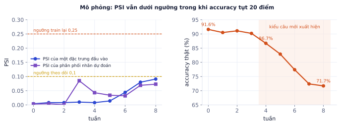
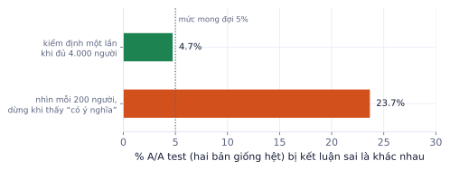
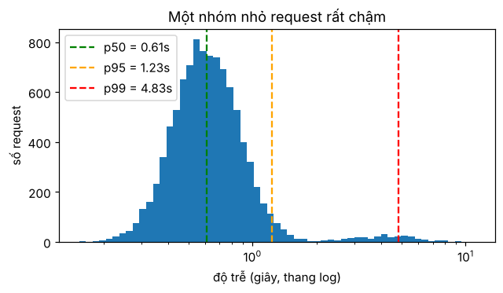

Giai đoạn P8 · Production và MLOpsTuần 35–39Có nội dung đầy đủ
Hệ thống chạy tốt hôm deploy chưa chắc chạy tốt tuần sau: người dùng hỏi kiểu mới, dữ liệu thay đổi, nhà cung cấp API đổi model, chi phí tăng vọt vì một tính năng mới. Giám sát cho bạn biết sớm khi có chuyện, và quản lý chi phí giữ cho sản phẩm có lãi. Bài này dạy các chỉ số cần theo dõi, cách phát hiện dữ liệu trôi (kèm mô phỏng cho thấy giới hạn của PSI), vòng phản hồi từ người dùng, A/B test đúng cách và các cách giảm chi phí.
Vì sao phải giám sát model
Vì sao cần học
Phần mềm thường hỏng thì báo lỗi. Model hỏng thì không báo gì: vẫn trả lời trơn tru, chỉ là sai nhiều hơn. Không có giám sát, bạn biết chuyện khi khách hàng phàn nàn hoặc khi hóa đơn API cuối tháng gấp ba. Khách hàng thuê AI Engineer để có hệ thống chạy lâu dài, không chỉ để có bản demo.
Ba lớp chỉ số
Lớp
Chỉ số
Ví dụ ngưỡng cảnh báo
Hệ thống
độ trễ p50/p95/p99, tỉ lệ lỗi, số request/giây, GPU utilization
p95 > 3 s trong 5 phút
Model
phân phối nhãn dự đoán, độ tự tin, độ dài đầu ra, tỉ lệ JSON hỏng, tỉ lệ từ chối
tỉ lệ JSON hỏng > 2%
Kinh doanh
tỉ lệ người dùng bấm thích, tỉ lệ chuyển cho nhân viên, chi phí mỗi hội thoại
chi phí/ngày vượt ngân sách 20%
Lớp hệ thống cho biết service có chạy không; lớp model cho biết model có hành xử như cũ không; lớp kinh doanh cho biết sản phẩm có giúp được ai không. Thiếu lớp nào cũng có thể bỏ sót sự cố.
Phân vị quan trọng hơn trung bình
p95 là giá trị mà 95% yêu cầu nhanh hơn. Trung bình bị kéo bởi vài giá trị cực đoan và che giấu trải nghiệm của nhóm người dùng chậm.
Ví dụ từng bước
10 độ trễ (giây), đã sắp xếp: 0.3, 0.4, 0.4, 0.5, 0.6, 0.6, 0.7, 0.9, 2.8, 6.0.
Trung bình: 13.2 / 10 = 1,32 s. Nghe ổn.
p50 (giá trị thứ ⌈0.5 × 10⌉ = 5): 0,6 s. Một nửa người dùng rất nhanh.
p90 (giá trị thứ 9): 2,8 s. 1/10 người dùng chờ gấp gần 5 lần bình thường, và một người chờ 6 giây.
Trung bình 1,32 s không cho thấy cả hai điều đó.
Log và tracing
Mỗi yêu cầu ghi một bản log có cấu trúc (JSON, một dòng), để máy đọc và lọc được:
Với hệ RAG/agent, tracing ghi cả cây các bước: truy vấn, các đoạn tìm được, từng lần gọi LLM và tool, thời gian từng bước. Khi người dùng báo "bot trả lời sai", bạn tra req_id và thấy: tìm nhầm tài liệu, hay tìm đúng mà LLM đọc sai. Công cụ: Langfuse, LangSmith, Phoenix (mã nguồn mở), hoặc OpenTelemetry.
Lỗi hay gặp
Log nguyên văn tin nhắn người dùng vào hệ thống log chung. Số điện thoại, địa chỉ, thông tin sức khỏe sẽ nằm ở nơi nhiều người truy cập được và lưu rất lâu. Che PII trước khi ghi (P4.8), giới hạn thời gian lưu, phân quyền truy cập log có nội dung.
Dữ liệu trôi (drift)
Phân phối đầu vào thay đổi theo thời gian: mùa mua sắm, sản phẩm mới, người dùng mới, cách viết mới. Model train trên dữ liệu cũ sẽ tệ dần mà không báo lỗi.
PSI (Population Stability Index) so phân phối của một đại lượng giữa lúc train (e) và hiện tại (a), chia thành các nhóm:
PSI = Σ (aᵢ − eᵢ) · ln(aᵢ / eᵢ)
PSI < 0.1: ổn | 0.1–0.25: thay đổi vừa, theo dõi | > 0.25: thay đổi lớn, xem xét train lại
Ví dụ từng bước
Độ dài tin nhắn chia 3 nhóm (ngắn, vừa, dài). Lúc train: e = [0.5, 0.3, 0.2]. Tuần này: a = [0.3, 0.3, 0.4].
PSI ≈ 0.241: thay đổi vừa, gần ngưỡng lớn. Người dùng đang viết dài hơn nhiều, cần xem vì sao.
Giới hạn của PSI
Mô phỏng: một model phân loại 4 ý định, train ở tuần 0. Từ tuần 4, xuất hiện một kiểu viết mới cho ý định "đổi hàng" khiến model nhầm sang ý định khác, tăng dần mỗi tuần. Theo dõi PSI của một đặc trưng đầu vào và PSI của phân phối nhãn dự đoán:

PSI của cả hai đại lượng đều nằm dưới ngưỡng 0,1 suốt 8 tuần, trong khi accuracy thật tụt từ 91,6% xuống 71,7%. PSI nhãn dự đoán còn nhảy ở tuần 3 khi tỉ lệ các ý định đổi (model vẫn đúng) nhưng không báo động khi model thật sự kém đi.
Bài học: PSI đo phân phối thay đổi, không đo model sai. Thay đổi lớn có thể vô hại; thay đổi nhỏ ở đúng chỗ có thể rất hại. Cần thêm:
Kiểm tra mẫu có nhãn định kỳ: mỗi tuần gán nhãn tay 100–200 yêu cầu ngẫu nhiên, đo accuracy thật. Đây là chỉ số đáng tin nhất, và không đắt.
Phản hồi người dùng: tỉ lệ bấm không thích, tỉ lệ chuyển nhân viên.
Độ tự tin của model: tỉ lệ dự đoán có xác suất thấp tăng lên là dấu hiệu gặp dữ liệu lạ.
Với văn bản: phân phối độ dài, chủ đề (cụm embedding), ngôn ngữ, tỉ lệ câu trả lời "không có thông tin".
Vòng phản hồi
Nút thích/không thích, người dùng sửa câu trả lời, chuyển cho nhân viên: đây là dữ liệu quý nhất của hệ thống.
Thu thập ca bị chê (kèm trace đầy đủ).
Phân loại nguyên nhân: tìm sai tài liệu, thiếu tài liệu, LLM đọc sai, câu hỏi ngoài phạm vi.
Bổ sung vào bộ eval (P4.3) để lỗi đó không quay lại, và vào dữ liệu fine-tune hoặc preference (P6.2) nếu cần.
A/B test
Chia ngẫu nhiên người dùng thành hai nhóm dùng phiên bản cũ (A) và mới (B), so chỉ số kinh doanh. Chỉ A/B test sau khi phiên bản mới đã qua eval offline.
Cỡ mẫu
Cần bao nhiêu người dùng để thấy được một cải tiến? Với tỉ lệ (ví dụ tỉ lệ thích), độ tin cậy 95% và độ mạnh 80%:
Tỉ lệ thích hiện tại 70%, muốn phát hiện được mức tăng lên 73%:
n ≈ 7.84 × (0.7 × 0.3 + 0.73 × 0.27) / 0.03² = 7.84 × 0.4071 / 0.0009 ≈ 3.550 người dùng mỗi nhóm.
Muốn phát hiện mức tăng nhỏ hơn (1 điểm) cần gấp khoảng 9 lần. Nếu sản phẩm chỉ có 500 người dùng mỗi tuần, A/B test cho cải tiến nhỏ là không khả thi; dựa vào eval offline.
Không dừng sớm
Mô phỏng A/A test: hai nhóm dùng cùng một phiên bản (tỉ lệ thích 70%), 4.000 người mỗi nhóm, lặp 3.000 lần.

Kiểm định một lần khi đủ cỡ mẫu: kết luận sai 4,7% (đúng như mức 5% mong đợi). Nhìn kết quả sau mỗi 200 người và dừng ngay khi thấy "có ý nghĩa": kết luận sai 23,7%, gấp 5 lần.
Quy tắc: đặt trước chỉ số chính, ngưỡng, cỡ mẫu và thời gian chạy (ít nhất một tuần trọn để tránh khác biệt theo ngày trong tuần); chỉ kết luận khi đủ cỡ mẫu.
Giảm chi phí
Cách
Ý tưởng
Lưu ý
Model nhỏ hơn
dùng model nhỏ nhất qua được eval
đo lại eval sau khi đổi
Định tuyến
câu dễ sang model rẻ, câu khó sang model mạnh
cần bộ phân loại độ khó đáng tin
Cache
câu hỏi trùng trả kết quả đã lưu
cache gần trùng (embedding) cần ngưỡng chặt
Prompt caching
phần đầu prompt lặp lại (system prompt, tài liệu dài) được nhà cung cấp tính giá rẻ hơn nhiều
đặt phần cố định ở đầu, phần thay đổi ở cuối
Rút gọn context
ít đoạn RAG hơn nhưng chọn tốt hơn (reranker), tóm tắt lịch sử
đo chất lượng sau khi rút
Batch API
việc không cần ngay chạy theo lô với giá rẻ hơn
kết quả trả sau vài giờ
Giới hạn
max token đầu ra, số bước agent, ngân sách mỗi người dùng
chống vòng lặp đốt tiền
Ví dụ từng bước
Chi phí LLM 450 USD/ngày. Thêm cache khớp chính xác, tỉ lệ trúng 25%:
Đo tỉ lệ trúng thật trong một tuần trước khi hứa với khách: với chatbot có nhiều câu hỏi lặp (giờ mở cửa, phí ship) tỉ lệ cao; với câu hỏi cá nhân hóa (tình trạng đơn của tôi) gần như bằng 0, và không được cache vì mỗi người một đáp án.
Ghi nhớ: đặt cảnh báo cho cả chất lượng lẫn chi phí. Một vòng lặp agent lỗi có thể đốt ngân sách cả tháng trong một đêm. Và chỉ số tốt nhất cho chất lượng model vẫn là một mẫu nhỏ có nhãn mỗi tuần.
Tự kiểm tra nhanh
Tóm tắt bài và thuật ngữ
Chủ đề
Ý chính
Chỉ số
hệ thống, model, kinh doanh; dùng phân vị thay trung bình
Log, tracing
JSON mỗi yêu cầu, cây các bước RAG/agent; che PII
Drift
PSI đo phân phối đổi, không đo model sai; cần mẫu có nhãn định kỳ
Phản hồi
ca bị chê → phân loại nguyên nhân → bộ eval
A/B test
tính cỡ mẫu trước; không dừng sớm khi "nhìn trộm"
Chi phí
model nhỏ, định tuyến, cache, prompt caching, batch, giới hạn
Thuật ngữ
Nghĩa
observability
khả năng quan sát hệ thống từ log, metric, trace
p50 / p95 / p99
phân vị độ trễ
structured logging
log dạng có cấu trúc (JSON)
tracing
ghi lại cây các bước của một yêu cầu
data drift / concept drift
phân phối đầu vào đổi / quan hệ đầu vào–đáp án đổi
PSI
Population Stability Index
A/B test / A/A test
so hai phiên bản / so một phiên bản với chính nó để kiểm tra quy trình
statistical power
xác suất phát hiện được khác biệt có thật
peeking
xem kết quả giữa chừng và dừng sớm
prompt caching
giảm giá cho phần đầu prompt lặp lại
Prometheus / Grafana
thu thập metric / vẽ dashboard
Ô tự chấm đã giải đúng0 / 6
Bài 1
Phân vị
tính tay
20 độ trễ (giây), đã sắp xếp: 0.4, 0.5, 0.5, 0.6, 0.6, 0.7, 0.7, 0.7, 0.8, 0.8, 0.9, 0.9, 1.0, 1.0, 1.1, 1.2, 1.4, 1.8, 4.5, 9.0. Dùng quy ước p95 = giá trị thứ ⌈0.95·n⌉.
Lời giải
Trung bình 1,455 s bị kéo lên bởi hai giá trị chậm. p50 = giá trị thứ 10 = 0,8 s. p95 = giá trị thứ 19 = 4,5 s. Trung bình không cho thấy 10% yêu cầu chậm gấp 5–10 lần bình thường.
(0.7 − 0.5)·ln(1.4) + (0.3 − 0.5)·ln(0.6) = 0.0673 + 0.1022 ≈ 0.17: thay đổi vừa, cần theo dõi và kiểm tra chất lượng trên câu hỏi ngắn.
Bài 3
Tác động của cache
tính tay
Chi phí LLM 300 USD/ngày. Cache trả lời được 30% yêu cầu, mỗi lần trúng cache tốn gần như 0.
Lời giải
300 × 0,7 = 210 USD/ngày, tiết kiệm 90 USD/ngày, 2.700 USD/tháng. Cache gần trùng (theo embedding) trúng nhiều hơn nhưng có rủi ro trả lời sai câu hỏi hơi khác; đặt ngưỡng tương đồng chặt và đo.
Bài 4
Thiết kế dashboard
thiết kế
Thiết kế dashboard 6 chỉ số cho chatbot chăm sóc khách hàng dùng RAG. Mỗi chỉ số: tên, cách tính, ngưỡng cảnh báo, ai nhận cảnh báo.
Lời giải
p95 độ trễ trả lời: phân vị 95 trong 5 phút; > 5 s; kỹ sư trực. 2. Tỉ lệ lỗi (HTTP 5xx, timeout): lỗi/tổng; > 1%; kỹ sư trực. 3. Tỉ lệ "không có thông tin": câu trả lời từ chối/tổng; tăng gấp đôi so với tuần trước; nhóm nội dung (có thể thiếu tài liệu mới). 4. Tỉ lệ thích: thích/(thích + không thích); < 70%; nhóm sản phẩm. 5. Tỉ lệ chuyển nhân viên: chuyển/tổng hội thoại; > 15%; nhóm CSKH. 6. Chi phí mỗi hội thoại và tổng theo ngày: token × giá; vượt ngân sách 20%; trưởng nhóm kỹ thuật.
Bài 5
Log và metric cho API
code
Thêm vào FastAPI ở P8.1: middleware ghi log JSON mỗi request (id, đường dẫn, mã trạng thái, độ trễ) và metric Prometheus (histogram độ trễ, bộ đếm lỗi) tại /metrics.
Code tham khảo
importjson,time,uuid,loggingfromfastapiimportFastAPI,Request,Responsefromprometheus_clientimportHistogram,Counter,generate_latest,CONTENT_TYPE_LATESTapp=FastAPI()log=logging.getLogger("api");logging.basicConfig(level=logging.INFO,format="%(message)s")LATENCY=Histogram("request_latency_seconds","Độ trễ request",["path"],buckets=[0.1,0.25,0.5,1,2,3,5,10])ERRORS=Counter("request_errors_total","Số request lỗi",["path","status"])@app.middleware("http")asyncdefobserve(request:Request,call_next):rid,t0=str(uuid.uuid4()),time.perf_counter()response=awaitcall_next(request)dt=time.perf_counter()-t0LATENCY.labels(request.url.path).observe(dt)ifresponse.status_code>=500:ERRORS.labels(request.url.path,str(response.status_code)).inc()log.info(json.dumps({"id":rid,"path":request.url.path,"status":response.status_code,"latency_s":round(dt,3)}))response.headers["X-Request-ID"]=ridreturnresponse@app.get("/metrics")defmetrics():returnResponse(generate_latest(),media_type=CONTENT_TYPE_LATEST)# thử: gọi vài request rồi đọc metric như Prometheus sẽ đọcfromfastapi.testclientimportTestClientc=TestClient(app)for_inrange(3):c.get("/metrics")print([lforlinc.get("/metrics").text.splitlines()ifl.startswith("request_latency_seconds_count")])
Kết quả khi chạyđã chạy sẵn cần FastAPI, prometheus_clientMở trên Colab ↗
Dùng: ba lớp chỉ số, phân vị p50/p95/p99, SLO (cam kết mức dịch vụ).
Log độ trễ 10.000 request của một API: phần lớn nhanh, nhưng 3% request phải gọi thêm một tool chậm. Tính trung bình, p50, p95, p99, và tỉ lệ request vi phạm SLO "p95 dưới 2 giây". Vẽ histogram thang log có đánh dấu các phân vị.
tb=lat.mean()p50,p95,p99=np.percentile(lat,[50,95,99])vi_pham=(lat>2).mean()fig,ax=plt.subplots(figsize=(6.5,3.2))ax.hist(lat,bins=np.logspace(np.log10(lat.min()),np.log10(lat.max()),60))ax.set_xscale("log")forten,v,cin[("p50",p50,"g"),("p95",p95,"orange"),("p99",p99,"r")]:ax.axvline(v,color=c,ls="--",label=f"{ten} = {v:.2f}s")ax.legend();ax.set(xlabel="độ trễ (giây, thang log)",ylabel="số request",title="Một nhóm nhỏ request rất chậm")print(f"trung bình {tb:.2f}s | p50 {p50:.2f} | p95 {p95:.2f} | p99 {p99:.2f} | trên 2s: {vi_pham:.1%}")
Kết quả khi chạy
trung bình 0.75s | p50 0.61 | p95 1.23 | p99 4.83 | trên 2s: 2.9%

Trung bình và p50 trông ổn, nhưng cứ 100 người dùng có 1 người chờ trên 4 giây. Dashboard nên hiện p95 và p99, tách theo loại request (có gọi tool hay không), vì nhóm chậm chính là nhóm người dùng phàn nàn.
Bài 7
Phát hiện dữ liệu trôi bằng PSI
ứng dụng
Dùng: data drift, PSI (Population Stability Index) với bin theo phân vị của dữ liệu train, ngưỡng cảnh báo.
Model chấm điểm tín dụng được train trên dữ liệu năm ngoái. Tháng này, so phân phối 3 đặc trưng (tuổi, thu nhập, số khoản vay) giữa train và production bằng PSI với 10 bin chia theo phân vị của train. Đặc trưng nào vượt ngưỡng 0,2 (trôi đáng kể)?
Mép bin: np.unique(np.percentile(a, np.linspace(0, 100, bins + 1))) (unique vì đặc trưng rời rạc có nhiều phân vị trùng); mở rộng hai mép ngoài thành −∞, +∞. Tỉ lệ mỗi bin p, q (cộng 1e-6 tránh log 0). PSI = Σ (q − p)·ln(q/p).
Thu nhập của khách tháng này cao hơn hẳn (có thể do mở rộng sang phân khúc mới): model chưa từng thấy nhiều khách như vậy, điểm số có thể lệch. PSI không nói model sai, chỉ báo nên kiểm tra lại chất lượng trên dữ liệu mới, và cân nhắc train lại.
Bài 8
A/B test: phiên bản mới có thật sự tốt hơn
ứng dụng
Dùng: A/B test với hai tỉ lệ (kiểm định z), cỡ mẫu cần thiết để phát hiện một mức cải thiện.
Chatbot cũ (A) và mới (B) được chia ngẫu nhiên cho người dùng; chỉ số là tỉ lệ cuộc trò chuyện được bấm "hữu ích". A: 412/2.000, B: 468/2.000. Tính chênh lệch, thống kê z, p-value hai phía. Rồi tính cỡ mẫu mỗi nhóm cần để phát hiện cải thiện từ 20% lên 22% với mức ý nghĩa 5% và power 80%.
Tỉ lệ gộp p = (xA + xB) / (nA + nB), sai số chuẩn √(p(1−p)(1/nA + 1/nB)), z = (pB − pA) / se, p_value = 2·(1 − Φ(|z|)). Cỡ mẫu: n = (z_{0,975}·√(2p̄(1−p̄)) + z_{0,8}·√(p1(1−p1) + p2(1−p2)))² / (p2 − p1)².
Code tham khảo
pA,pB=xA/nA,xB/nBp=(xA+xB)/(nA+nB)z=(pB-pA)/math.sqrt(p*(1-p)*(1/nA+1/nB))p_value=2*(1-norm.cdf(abs(z)))p1,p2=0.20,0.22;pbar=(p1+p2)/2n_can=(norm.ppf(0.975)*math.sqrt(2*pbar*(1-pbar))+norm.ppf(0.8)*math.sqrt(p1*(1-p1)+p2*(1-p2)))**2/(p2-p1)**2print(f"A {pA:.1%} → B {pB:.1%}, z = {z:.2f}, p-value = {p_value:.3f}")print(f"cần khoảng {n_can:,.0f} người dùng mỗi nhóm để thấy được mức tăng 2 điểm phần trăm")
Kết quả khi chạy
A 20.6% → B 23.4%, z = 2.14, p-value = 0.033
cần khoảng 6,509 người dùng mỗi nhóm để thấy được mức tăng 2 điểm phần trăm
Cải thiện 2,8 điểm phần trăm trên 2.000 người mỗi nhóm cho p-value dưới 0,05: đủ bằng chứng. Nhưng muốn phát hiện mức tăng nhỏ hơn (2 điểm từ mức 20%) thì cần khoảng 6.600 người mỗi nhóm: quyết định thời gian chạy A/B test trước khi bắt đầu, và không dừng sớm ngay khi thấy kết quả đẹp.
Lab 12: giám sát API của Lab 11
Các bước
Thêm middleware log và metric như bài tập 5, cộng metric riêng cho LLM: token vào, token ra, chi phí ước tính mỗi request, tỉ lệ JSON hỏng.
Chạy Prometheus và Grafana bằng docker compose cùng API. Dựng dashboard: request/giây, p50/p95/p99, tỉ lệ lỗi, token và chi phí theo giờ.
Đặt cảnh báo: p95 > 3 giây trong 5 phút, tỉ lệ lỗi > 1%.
Thử nghiệm: cố tình làm chậm API (thêm sleep ngẫu nhiên vào 10% request), chạy load test, xác nhận cảnh báo bắn ra.
Thêm cache cho /predict (khóa là hash của đầu vào), đo tỉ lệ trúng và chi phí giảm.
Viết một trang "runbook": khi cảnh báo p95 bắn, kiểm tra những gì theo thứ tự nào.
Xong khi
Cảnh báo bắn ra khi bạn cố tình làm chậm API, có ảnh chụp dashboard.
Có số liệu tỉ lệ trúng cache và chi phí trước/sau.
Xong bài khiCảnh báo bắn ra khi bạn cố tình làm chậm API.